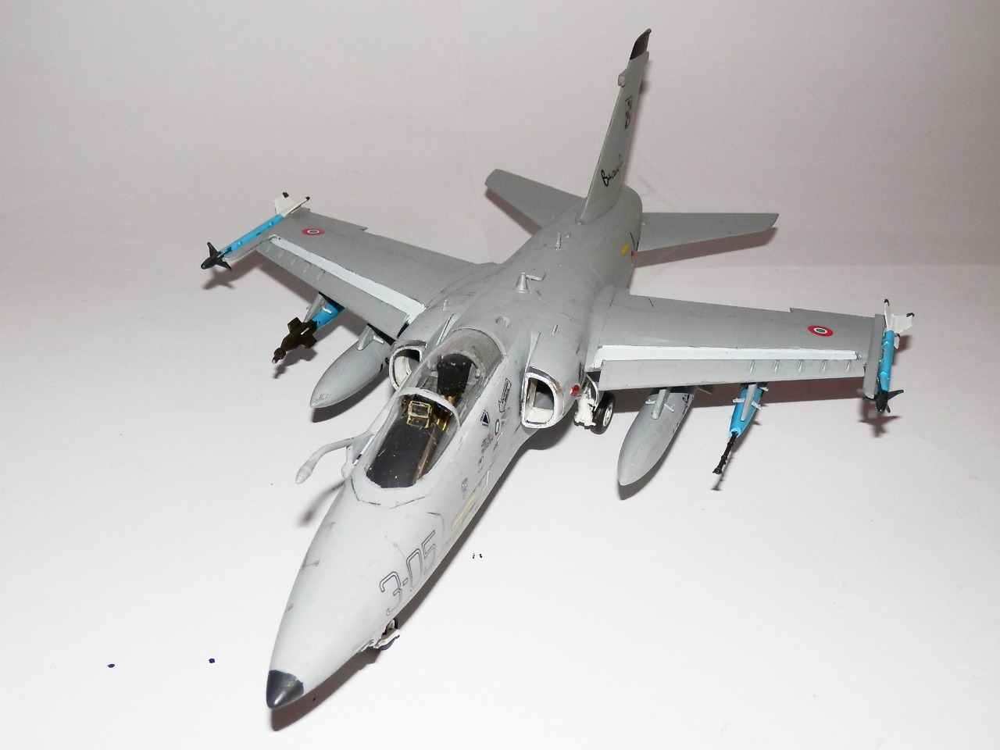
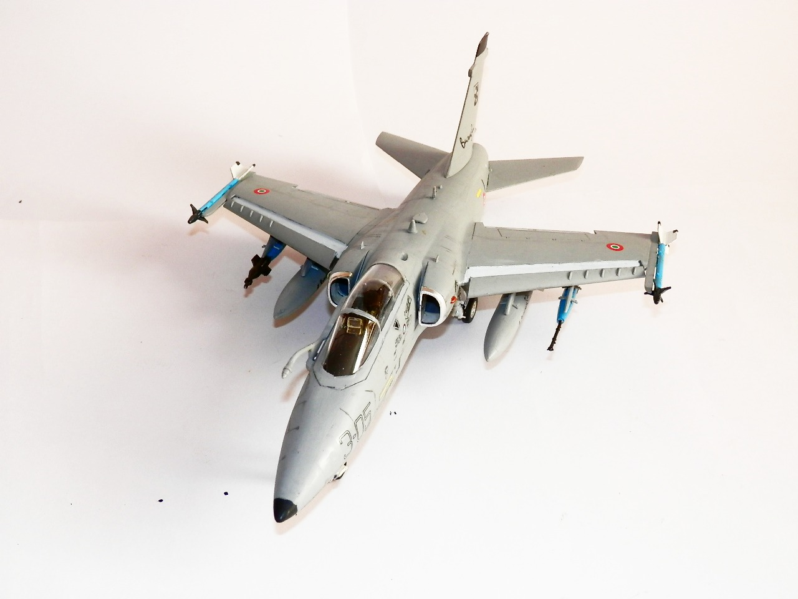
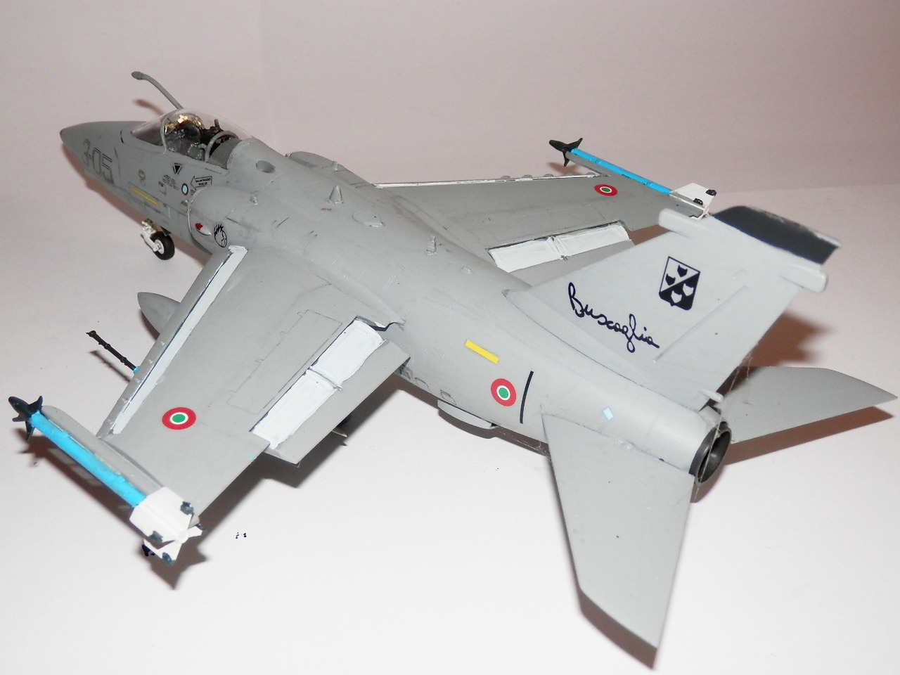
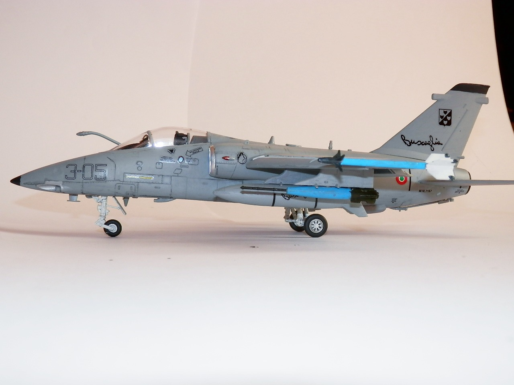
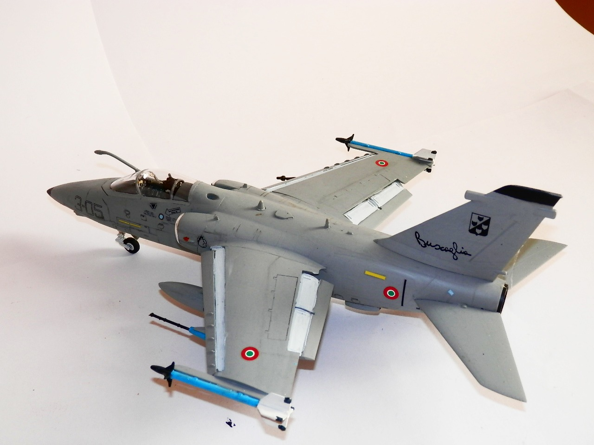
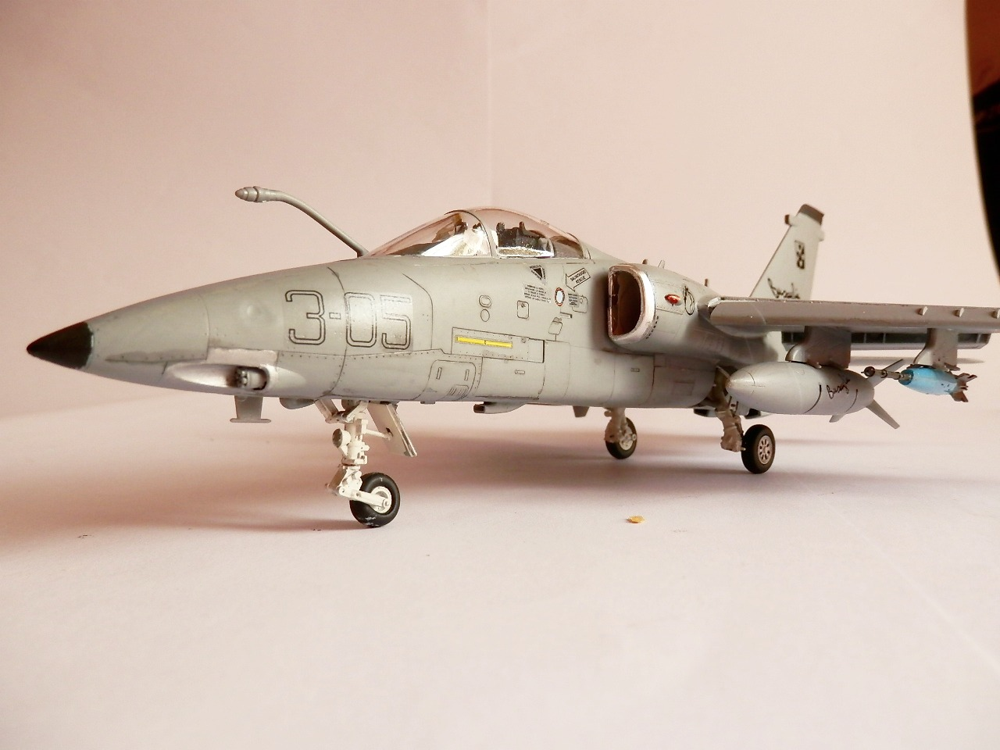

Aerei · scale model archive
Aeritalia Macchi Embraer AMX
Aeritalia Macchi Embraer AMX — Kit: Trumpeter, Scale: 1/48 3 Aerobrigata 'Buscaglia'. Interesting subject of a not so common aircraft. Please note the…

Photo gallery





English description
Interesting subject of a not so common aircraft. Please note the missile training rounds in the sake of peace....
Descrizione italiana
Soggetto interessante di un aereo non così comune. Da notare i missili da addestramento, in nome della pace...